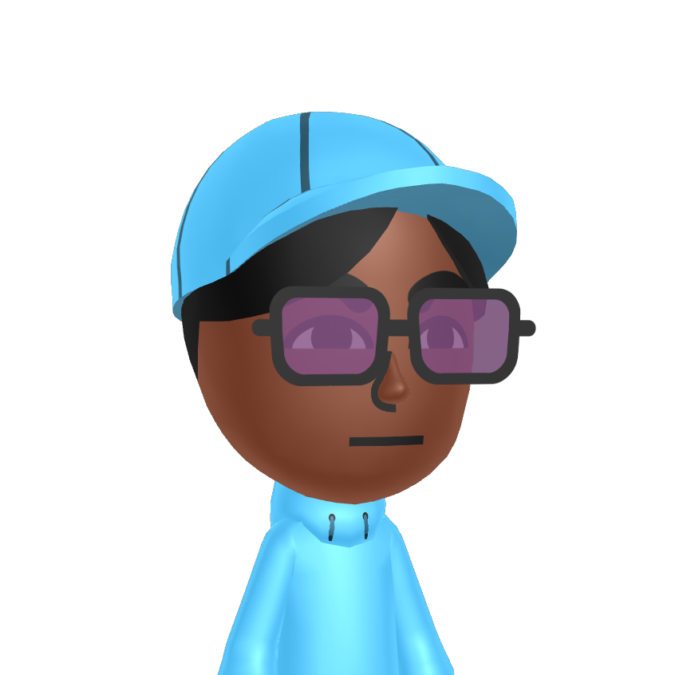

dvyOS!
[time]
Happiness is good!

Hi, my name is Divine, but I also go by Dorcupi, dvy, DorcDev, alongside many others. This is my portfolio site!
I work on many things in my freetime and I have many hobbies, and this is where I will showcase them all!!
One of my hobbies is making datapacks for Minecraft and making videos on them under the name Dorcupi.
However, I also make my own games in Godot under the name DorcDev.
And lastly, I like graphic design, making music, and also being a big theater kid.
Check out the OS to learn more about me!